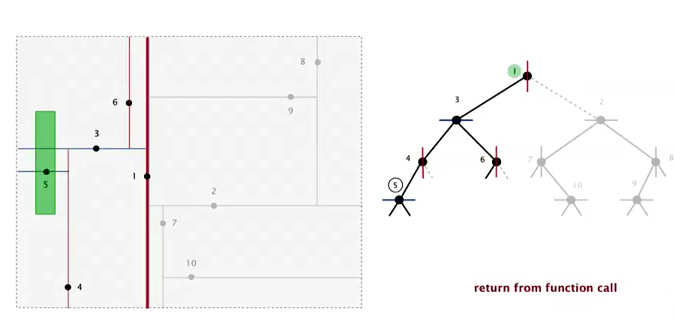

1. 1d Range Search
Goal: intersections of geometric objects.

Solution: BST
1d range search
operations required:
- insert
- search
- delete
- range search: all keys between k1 and k2
- range count: how many keys are between k1 and k2
→ find points on an interval

implementation by BST
range count
using the rank() function for the BST (or use the size of a tree)

注意什么时候要加1...
public int size(Key hi, Key lo){
if(contains(hi)) return rank(hi)-rank(lo)+1;
else return rank(hi) - rank(lo);
}
range search
类似inorder traversal的方式:
- find in left subtree (if could fall into range)
- check current node
- find in right subtree

running time: R+lgN (R=nb of nodes in range)
2. Line Segment Intersection
Orthognal line segment intersection search:
find all intersections given N horizontal/vertical lines

Non-degeneracy assumption: all x-coord and y-coord are distinct.
naive algo: check all pairs...
Sweep-line algorithm


- sweep a vertical line from left to right.
- when hit the left end of horizontal-segment (h-seg) → insert into a BST
- when hit the right end of a h-seg → delete from BST
- when hit a vertical-seg: ⇒ 1d range search !
关于怎么sweep的:
没有仔细讲, 不过我觉得就是把所有的x坐标排好序, 有个skyline问题也是涉及如何sweep的.
proposition
running time is NlgN+R (R=nb of intersections).
proof.
- Sort by x-coord (or use PQ) → NlgN
- insert/delete y-coord to BST → NlgN
- range search → NlgN + R
3. Kd-trees
An extension of BST: 2d-keys.
- insert: insert 2d points
- search
- range search: find all keys lying in a 2d rectangle (h-v rectangle)
- range count
gird implementation
divide space into a M-by-M grid (uniform squares).
space: N + M^2
time: 1 + N/M^2
→ choose square to balance space and time.
problem: points are not uniformly distributed.

2d tree
Use a tree to represent the subdivision of the space.
2d tree: recursively divide the space into 2 halfplanes

construct the 2d tree by adding points: alternating between horizontal and vertical partitioning for each level of tree.

Data structure: BST alternating x and y-coords as key.

Range search for 2d tree
find all points lying in a rectangle.
依然类似tree traversal算法:
- check point in node
- find in left subtree (if could be in range — the rectangle intersects the splitting line)
- find in right subtree

analysis
Typical case: R + lgN
worst case: R+ sqrt(N) (even if tree is balanced)
(proof is hard)
Nearest Neighbour seach
find closest point to a query point.
- check dist from query point to node
- check in left tree (if could contain a closer point — 和两点连线与splitting line的角度有关系)
- check in right tree
analysis
typical case: lgN
worst case: N
Flocking boids
3 simple rules to get a simulation of flocking.

Kd tree
partition the k-dim space into 2 halfspaces.
cycle through k dimensions.

(居然时一个本科生发现的!)
Nbody simulation:
treat clusters as an aggregated node
4. Interval search tree
1d interval search: data are intervals
- insert interval
- search interval
- delete interval
- intersection query: find all intervals that intersects (lo,hi)

Nondegeneracy assumption: all left endpoint of intervals are distinct.
API:
put(Key lo, Key hi, Value val) get(Key lo, Key hi) delete(Key lo, Key hi) Iterable<Key> intersects(Key lo, Key hi)
Interval search tree:
- BST using left endpoint as key
- in each node: store the max right endpoint of the subtree

insert
类似BST, 加上维护一下maxendpoint即可.
search
search any one interval that intersects (lo,hi)
- if node intersects, return
- if left.maxendpoint < lo: go right
- else: go left
*proof. *
主要证明一点: if no intersection to left ⇒ then no intersection to the right

5. Rectangle intersection
Goal: find all intersection among N rectangles.
(non degeneracy assumption: all x and y are distinct)
bottom line: linearithmic algo.
sweep-line algorithm:
sweep vertical line from left to right.
- when hit left part of a rect ⇒ put into an interval search tree
- when hit right part of a rect ⇒ remove interval
- every time befor adding ⇒ check intersection
reduces the 2d rect intersection pb to 1d interval search pb.
complexity:
NlgN+RlgN
summery:


Comments !